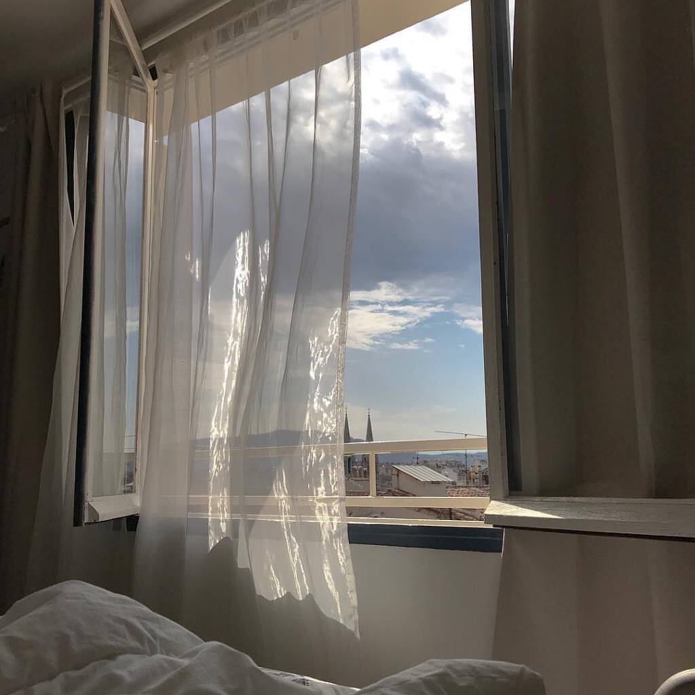

첫번째, 집입니다.
그냥 집이라기보다는 아래 사진과 같이 햇살이 창을 통해 들어오고
뭐랄까 커튼이 살랑거리는, 기분 좋은 바람도 솔솔 불어오는 그런 집.
두번째, 고양이를 포함한 털복숭이 선생님들을 좋아해요.
품종이 있는 친구들보다 이 세상에 단 하나뿐인 친구들을 더 좋아하는 편이고,
미용이 잘 되어있는 친구들보다 엉망진창 먼지같은 털복숭이 친구들이 좋아요...
멍충미 최고..
세번째, 잔잔한 음악과 함께 하는 독서는 최고입니다.
소설만 주구장창 읽는 편이지만, 책 읽는 즐거움에 폭 빠져 살아요.
맨날맨날 회사 안가고 노래 들으면서 책만 읽고싶다..
젠장..